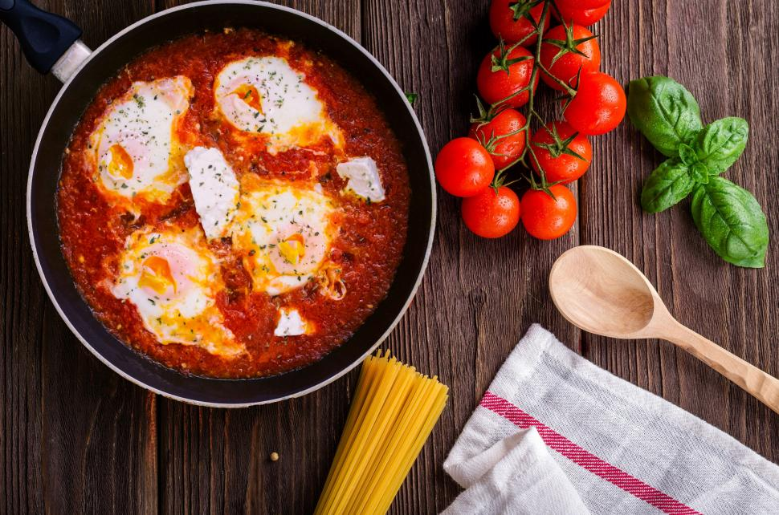

Home
Shakshuka

"Shakshuka in a pan with ingredients around" by
Dana Tentis is licensed under CC0 1.0
Description
Shakshuka (or shakshouka) is a traditional Tunisian dish featuring poached eggs in a spicy tomato
sauce with onions, bell pepper, and garlic.
Ingredients
- 3 tablespoons olive oil
- 1 ⅓ cups chopped onion
- 1 cup thinly sliced bell peppers
- 2 cloves garlic, minced, or to taste
- 2 ½ cups chopped tomatoes
- 1 hot chile pepper, seeded and finely chopped, or to taste
- 1 teaspoon ground cumin
- 1 teaspoon paprika
- 1 teaspoon salt
- 4 large eggs
Directions
- Gather all ingredients
- Heat olive oil in a skillet over medium heat. Stir in onion, bell pepper, and garlic; cook and
stir until vegetables have softened and onion has turned translucent, about 5 minutes
- Meanwhile, mix together tomatoes, chile pepper, cumin, paprika, and salt in a bowl
- Stir tomato mixture into onion mixture. Simmer, uncovered, until tomato juices have cooked off,
about 10 minutes
- Make 4 indentations in tomato mixture; crack eggs into indentations. Cover the skillet and cook
until eggs are firm but not dry, about 5 minutes
- Serve and enjoy!